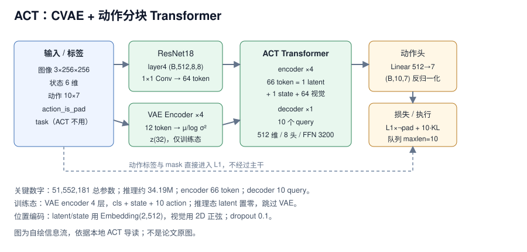

RT-1 论文精读：把连续动作切成 256 个 bin 的机器人 Transformer
RT-1 重新分配的是“连续控制”与“序列建模”的接口——把每个动作维度均匀切成 256 个 bin，让 Transformer 用分类的方式出动作，而不是回归连续值。
动作表示2022
ACT 把“每步回归一个动作”改成“一次预测 10 步动作块”，并用一个只在训练时存在的 CVAE 潜变量给动作生成引入随机隐变量。本地章节在 act_py310 环境实例化真实模型跑前向实测：总参数 51,552,181（51.55M），剔除仅训练用的 VAE encoder 后推理约 34.19M；输入 3×256×256 图像 + 6 维状态，输出 10×7 动作块；主干 512 维、8 头、encoder 4 层 + decoder 1 层，encoder 侧共 66 个 token（1 latent + 1 state + 64 视觉）。这些是章节实测值，不是论文作者报告；章节没有给成功率、延迟或显存。
来源约定：本文事实只取自本仓库 ACT 结构导读 与同章目录 README，没有用模型记忆补写论文细节。
标注约定：【实测】指章节在真实模型上跑出的维度/参数量；【章节】指章节的配置与归纳；【公开】指公开入口，未在本地章节核验。
版本：LeRobot 固定10b7b353（章节给出）；论文版本与日期章节未给；查阅日期 2026-11-01。
| 资源 | 入口 | 阅读用途 |
|---|---|---|
| 论文 | arXiv:2304.13705* | 原始方法、低成本双臂硬件与实验（公开入口，未在本地章节核验） |
| 源码 | huggingface/lerobot，固定 10b7b353；模块 lerobot/common/policies/act/modeling_act.py；本章 3_train.py | 模型实现、配置、训练循环与维度追踪 |
| 权重 | Google Drive checkpoint（章节 README）；本地 ./ckpt/act_y | 无训练 GPU 时直接部署；加载检查 |
| 项目页 | tonyzhaozh.github.io/aloha* | 原版 ALOHA/ACT 视频与说明（未在本地章节核验） |
| 数据集 | 本地 demo_data_example（1 条轨迹 137 帧 @20fps）；自采集 ./demo_data | 维度实测、归一化统计与回放 |
论文题目：ACT（公开题目 Learning Fine-Grained Bimanual Manipulation with Low-Cost Hardware，未在本地章节核验）；arXiv：2304.13705*；代码 commit：10b7b353；查阅日期：2026-11-01。
* 表示公开入口未在本地章节核验；章节只给出 LeRobot 的 commit 与模块路径，没有给论文、GitHub 或项目页 URL。
版本提示：本章不是论文复述，而是一次“读代码 + 跑前向”的记录。所有维度、参数量与归一化统计都来自 lerobot@10b7b353 的 ACTPolicy 与 _trace_act_shapes.py 的实测输出；论文原表的成功率、硬件与训练配方均未在章节出现，本文不补写。
一句话：在“只有几十条示教、没有语言输入、单卡可训”的约束下，ACT 用 10 步动作块降低决策频率，并在训练时用 CVAE 潜变量给动作生成引入随机隐变量，而不是只做确定性回归。【章节】

图 1：ACT 的 CVAE、视觉 token 与动作块信息流。自绘，依据本地导读；不是论文原图。
对比主流路径：逐步行为克隆（观测 → 单步动作）→ 动作分块 + CVAE（观测 → 10 步动作，训练时多一个 latent 分支）。
n_obs_steps 被代码限制为 1，没有历史帧；10 步 chunk 连续执行，闭环纠偏依赖重规划或时间集成；VAE 只在训练态生效，推理时 latent 置零。| 张量 | 形状 | dtype / 范围 | 作用 |
|---|---|---|---|
observation.image | (B,3,256,256) | float32，0–1 | 单帧 RGB，ResNet18 输入 |
observation.state | (B,6) | float32 | 关节状态，投影成 1 个 token |
action | (B,10,7) | float32 | 未来 10 步监督标签（6 关节 + 1 夹爪） |
action_is_pad | (B,10) | bool | 尾部 padding 掩码，只作用于 L1 与 VAE 掩码 |
task | list[str]，长度 B | — | 数据里有，但 ACT 不使用语言 |
actions_hat | (B,10,7) | float32 | 反归一化后的动作块输出 |
视觉主干是 ResNet18（FrozenBatchNorm2d，stride 不膨胀），取 layer4 得到 (B,512,8,8)；1×1 卷积保持 512 通道，压平后加 2D 正弦位置编码，得到 (64,B,512) 的 64 个视觉 token。256/32 = 8，说明总步长是 32。【实测】
训练态把 cls 可学习嵌入、当前状态、未来 10 步动作拼成 12 个 token，经 4 层 ACTEncoder 后取 cls 输出，再投影成 64 维，前 32 维是 μ、后 32 维是 log σ²，重参数化采样出 z。注意力掩码 (B,12) 中 cls/state 位恒为 False，后 10 位用 action_is_pad，因此 padding 动作不会污染后验。【章节】
$$
\mathrm{KL} = -0.5 \sum_{j=1}^{32}\left(1+\log\sigma_j^2-\mu_j^2-e^{\log\sigma_j^2}\right)
$$
推理态跳过整个 VAE 分支，latent 置零后仍投影成 1 个 token，所以部署时不需要后验网络。【章节】
| 项目 | 值 | 说明 |
|---|---|---|
| VAE 输入 token | 12 = 1 cls + 1 state + 10 action | 仅训练态 |
| VAE 输出 | 64 = 32 μ + 32 log σ² | 采样得 z(32) |
| 主干 encoder 输入 | 66 = 1 latent + 1 state + 64 视觉 | 顺序是 [latent, state, 视觉...] |
| 视觉 token | 64 = 8×8 | ResNet18 layer4 特征图 |
dim_model / n_heads | 512 / 8 | 每头 64 维 |
dim_feedforward | 3200 | 6.25 × 512 |
| encoder / decoder 层数 | 4 / 1 | decoder 故意为 1，见 §5 |
| decoder query | 10，全零 + 可学习位置嵌入 | 对应 10 步 chunk |
| dropout / pre_norm | 0.1 / False | ACTConfig 实测值 |
| 位置编码 | Embedding(2,512) + 2D 正弦(256) | latent/state 与视觉各一套 |
n_obs_steps | 1 | 代码里 != 1 直接报错 |
chunk_size / n_action_steps | 10 / 10 | 一次预测并执行 10 步 |
读代码时看三处：encoder_in_tokens 的拼接顺序决定 latent 在 state 之前；key_padding_mask 只影响 VAE 后验；decoder 的 10 个 query 与视觉/状态 memory 做交叉注意力，输出再逐 token 过动作头。【实测】
动作头只有一个 Linear(512→7)，把 (B,10,512) 映射成 (B,10,7)，再按数据集统计量反归一化。总损失是带掩码的 L1 加 KL：
$$
\mathcal{L} = \mathrm{L1}_{\neg \mathrm{pad}}(\hat{a}, a) + 10.0 \cdot \mathrm{KL}
$$
L1 只对 ~action_is_pad 为真的步计算；章节只写“只算非 padding 位置”，没有给求和还是取平均的归约方式。kl_weight=10.0 是章节配置实测值；推理没有损失，也没有 VAE 项。【章节】
章节没有 LIBERO / ALOHA 成功率，也没有论文主表；能核验的是模型本身的参数账本与一次自定义数据集的训练时长。因此这一节不搭“模型 / 成功率”对照表，避免把不同口径的数字强行拼在一起。
| 模块 | 参数量 | 占比 |
|---|---|---|
vae_encoder | 17,332,736 | 33.6% |
encoder | 17,332,736 | 33.6% |
backbone（ResNet18） | 11,166,912 | 21.7% |
decoder | 5,385,856 | 10.4% |
encoder_img_feat_input_proj | 262,656 | 0.5% |
vae_encoder_latent_output_proj | 32,832 | 0.1% |
encoder_latent_input_proj | 16,896 | 0.0% |
decoder_pos_embed | 5,120 | 0.0% |
vae_encoder_action_input_proj | 4,096 | 0.0% |
action_head | 3,591 | 0.0% |
vae_encoder_robot_state_input_proj | 3,584 | 0.0% |
encoder_robot_state_input_proj | 3,584 | 0.0% |
encoder_1d_feature_pos_embed | 1,024 | 0.0% |
vae_encoder_cls_embed | 512 | 0.0% |
| 合计 | 51,552,181 | 100% |
读法：vae_encoder 与 encoder 各 17.33M，是因为两者复用同一个 ACTEncoder 实现；推理不跑 VAE，实际开销约 51.55M − 17.33M − 0.03M ≈ 34.19M。动作头只有 3,591 个参数，说明 ACT 的容量几乎都在视觉与 Transformer 主干，而不是输出层。
README 给出的可核验信息只有三条：自定义数据集上训练 ACT 约需 30–60 分钟；checkpoint 保存在 ./ckpt/act_y；4.deploy.ipynb 有 rollout 演示。章节没有给硬件型号、成功率、每任务 trials 或随机种子，rollout gif 不能当作成功率证据。
来源：本地章节 §3–§5（维度、参数量、归一化统计）与同章 README（训练时长、checkpoint 路径）。
章节没有作者消融，也没有对照实验数字。下表把“代码里可验证的设计选择”与“读者自己该测什么”分开，不能当成论文消融结论。
| 设计选择 | 章节证据 | 收益 | 代价 / 何时别用 |
|---|---|---|---|
n_decoder_layers=1 | 作者代码 7 层 bug 导致只有第 1 层生效，此处对齐原实现 | 省 6 层参数与计算 | 新任务可做 1 vs 4 层对照；别把 1 层当最优 |
chunk_size=10、n_action_steps=10 | 配置实测；一次执行整段 | 决策频率降为 1/10 | 开环漂移；接触密集任务应缩短或加时间集成 |
use_vae=True、kl_weight=10.0 | 训练日志有 kld_loss；总损失 L1 + 10×KL | 训练时提供随机隐变量 | 推理 latent 置零；章节未给 VAE 的消融，收益需自测 |
temporal_ensemble_coeff=None | 默认走动作队列 | 实现简单、延迟低 | 切到 0.01 时必须 n_action_steps=1，并改为每步前向 |
n_obs_steps=1 | 代码强制 != 1 报错 | 单帧输入，链路最短 | 需要历史/遮挡恢复时得改结构，不能只改配置 |
pretrained_backbone_weights=None | 默认不用 ImageNet；ACT_PRETRAINED_BACKBONE=1 才加载 | 免下载、训练快 | 小数据可能欠拟合；建议做开关对照 |
读者该不该复用：chunk + CVAE 的组合最值得复用；decoder 1 层是“对齐原实现”的产物，不是设计结论；时间集成与 ImageNet 初始化都应用同一套评测协议单独验证。
来源：本地章节 §4（ACTConfig 实测值）、§6（与 3_train.py 自带示意图的差异）。
章节没有给延迟、显存、控制频率或吞吐，只给了训练态/推理态的模块差异。因此不能从 34.19M 推算延迟，也不能用 1000 / 延迟 反推动作执行频率。
| 项目 | 训练态 | 推理态 |
|---|---|---|
| 参数量 | 51.55M | ≈34.19M |
| VAE encoder（17.33M） | 参与前向与 KL | 跳过，latent 置零 |
| 视觉主干 + 主干 Transformer | 参与 | 参与 |
| 输出 | (B,10,7) + L1/KL | (B,10,7)，取前 n_action_steps 步 |
| 动作队列 | — | deque(maxlen=10)，转置为 (10,B,7) |
| 调用方式 | 一个 batch 一次前向 | 队列空时再前向；每次 popleft 出 (B,7) |
测量协议章节未给：输入是否预置 GPU、热身次数、重复次数、取中位数、显存统计方式都没有。1000 / 延迟 只说明策略调用频率，不等于动作执行频率；chunk 10 在没有控制频率的情况下也无法换算成秒。真要比较，至少分开记录模型前向、完整请求（含图像预处理）与重规划间隔。
来源：本地章节 §2（推理路径）、§3.3（参数量）。
| 训练项目 | 章节值 |
|---|---|
| 硬件 | 章节未给（README 只说 30–60 分钟） |
| 优化器步数 | 章节未给 |
| 有效 batch | README 排错示例写 batch_size=64，不是论文配方 |
| 每卡 microbatch | 章节未给 |
| 梯度累积 | 章节未给 |
| 学习率 | 章节未给 |
| warmup 步数 | 章节未给 |
| EMA decay | 章节未给 |
| 冻结模块 | 无；VAE 仅训练态参与 |
chunk_size | 10 |
kl_weight | 10.0 |
dropout | 0.1 |
| 混合精度 | 章节未给（README 固定 torch 2.6.0 + cu124） |
章节没有给 GPU 数、microbatch 与累积步数，无法用 B_eff = N_GPU × B_micro × N_accum 反推有效 batch；README 里的 64 只是 DataLoader 的 pickle 排错示例，不能当训练配方。单卡复现时先保持 chunk_size=10、kl_weight=10.0 与归一化统计不变，再调 batch 与步数。
三级复现：
_trace_act_shapes.py 核对维度与参数量，再加载 ./ckpt/act_y 或 Google Drive checkpoint 跑 4.deploy.ipynb。demo_data_example 或 20–50 条自采集轨迹跑 3.train.ipynb，确认 loss、梯度与 checkpoint 保存。来源：本地章节 §4、§7 与同章 README。
| 顺序 | 路径 | 阅读重点 |
|---|---|---|
| 1 | lerobot/common/policies/act/modeling_act.py | ACT 总模型、VAE 分支、encoder/decoder、损失与动作队列 |
| 2 | 3_train.py | ACTPolicy 实例化、ACTConfig、训练循环与日志 |
| 3 | _trace_act_shapes.py | 逐阶段维度追踪；只依赖 demo_data_example/meta，几秒出结果 |
| 4 | 3_train.py 第 111–133 行 | 脚本自带 Mermaid 图；主体正确，但漏画 VAE 支路、token 顺序写成 state 在前 |
| 5 | 3_train.py 第 527 行 | 未删除的 pdb.set_trace()，直接跑会掉进调试器 |
| 6 | 4.deploy.ipynb | 动作队列 deque(maxlen=10)、select_action 与闭环 rollout |
| 7 | 1.collect_data.ipynb、5.language_env.ipynb | 数据采集与语言环境；ACT 本身不用语言 |
| 8 | demo_data_example/meta | 归一化统计来源 |
坑（章节明确给出或实测暴露）：
n_obs_steps != 1 会直接报错，想加历史帧不能只改 YAML。action 第 5 维 std=0.001，除下来会把噪声放大数百倍；章节建议至少 20–50 条轨迹。3_train.py 第 527 行的 pdb 断点要先注释。PicklingError 时把 num_workers 设为 0。task 字段对 ACT 无效，别误以为它有语言条件。章节给出的归一化统计（demo_data_example，1 条轨迹 137 帧 @20fps）：
state mean = [0.309, 0.039, 0.922, 1.575, 0.003, 1.570]
state std = [0.025, 0.116, 0.053, 0.007, 0.003, 0.002]
action mean = [0.442, -0.054, 1.497, 0.134, 1.570, -0.443, 0.518]
action std = [0.328, 0.146, 0.321, 0.249, 0.001, 0.328, 0.500]以下命令来自章节与同章 README，未在本机验证；路径按自己的仓库替换。
cd "04mujoco复现ACT、Pi0、SmolVLA"
conda create -n py310 python=3.10
pip install -r requirements.txt # 固定 lerobot@10b7b353、torch 2.6.0 cu124
pip install ipywidgets ipykernelexport HF_HUB_OFFLINE=1 TRANSFORMERS_OFFLINE=1
python _trace_act_shapes.py这组检查只证明：模型能实例化、维度与章节一致、demo_data_example/meta 可读。它不证明权重完整、真机可执行或任务成功率。
# 章节入口是 Notebook（jupyter lab 是教学写法）：训练约 30–60 分钟，checkpoint 到 ./ckpt/act_y
jupyter lab 3.train.ipynb
jupyter lab 4.deploy.ipynb没有训练 GPU 时，从 §1 的 Google Drive 目录下载 checkpoint，再跑 4.deploy.ipynb；章节没有给命令行评测脚本，也没有给成功率统计脚本。
先对齐 observation.image、observation.wrist_image、observation.state(6)、action(7) 的字段与形状，再重算 meta 统计量。动作维度或相机数量变化时，ACTConfig 的输入/输出特征与动作头维度都要改，不能只换数据路径。
可复用的是“chunk 降频 + 训练态隐变量 + 掩码处理变长”的组合；51.55M 的参数量说明它适合单卡、小数据的第一版基线，而不是替代大模型。
use_vae=True/False 对照，比较多峰演示（同一目标多种抓法）与确定性演示的差异；代价是训练侧多一个后验网络与 KL 权重需要调。相关章节：π0 精读、DiT4DiT 精读、SmolVLA 导读、04 章 README、09 策略诊断。